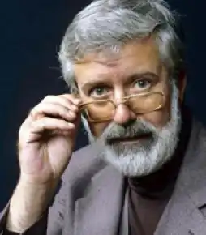
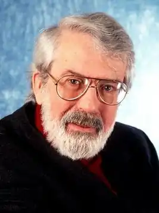
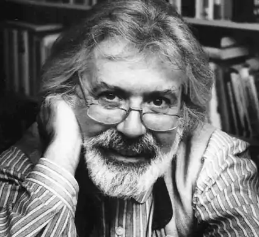
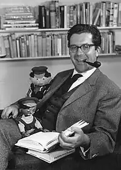
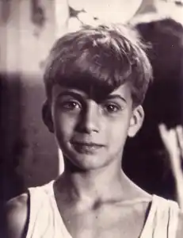

Міхаель Енде — один з найпопулярніших німецькомовних письменників післявоєнного часу. Його твори перекладені на сорок мов. Загальний тираж книг — понад двадцять мільйонів примірників. У Росії він став відомий в 1984-му, коли на екрани вийшов фільм "Нескінченна історія". книги німецького письменника на російську мову були переведені значно пізніше.
У невеликому німецькому містечку Гарміш народився Міхаель Енде. Дата народження цього письменника — 12 листопада 1929 року. Батько майбутнього літератора був живописцем, писав картини в таємничому сюрреалістичному стилі. Творчість Едгара Енді справила визначальний вплив на Міхаеля. Згодом, ставши дорослим, він прагнув відтворити стиль батька в своїх літературних творах. Однак дитинство Міхаеля Енде було далеко не безхмарним. У 1933 році в Німеччині, як відомо, керував усіма сферами життя Адольф Гітлер. І в країні панував тоталітаризм. Про те, яким має бути мистецтво в Третьому рейху, у фюрера були чіткі уявлення. Сюрреалістів Гітлер не схвалював, вважаючи, що мистецтво, яке вони представляють, є "дегенеративним". А тому картини батька Міхаеля, як і твори інших представників авангардного мистецтва, виявилися під суворою забороною. Міхаель Енде — письменник, який присвятив свою творчість дітям. Можливо, вибір тем для творів був пов'язаний з почуттям самотності, яке Енді відчував, будучи школярем. Батьки часто сварилися. Грошей в сім'ї не вистачало. Після того як творчість Енді-старшого виявилося під забороною, мати влаштувалася на роботу. Але це не поліпшило фінансового становища в сім'ї. Хлопчикові здавалося, що саме він є причиною нещасть і постійних скандалів. Батьки нерідко в своїх сварках вказували на те, що дитину утримувати у них немає можливості. Примарне почуття провини Міхаеля переросло в хронічне самотність
Навчався Міхаель Енде з рук геть погано. Одного разу він навіть залишився на другий рік. Невідомо, як би склалася доля Енді, якби одного разу він не познайомився з хлопчиком, які проживають по сусідству. Звали його Матіасом. Батько його тримав невелику книжкову крамницю. В першу чергу новий друг познайомив Енді з прекрасним світом літератури. А пізніше, коли Міхаелем було прочитано чимало захоплюючих книг, Матіас запропонував йому приступити до написання віршів. У 1935 році Енді перебралися до Мюнхена. У цьому місті вони знімали невелику квартиру. По сусідству жили художники, скульптори та інші люди мистецтва. Естетичні погляди Міхаеля формувалися під впливом не тільки творчеств батька, але і його знайомих. Однак цей вплив далеко не завжди було позитивним. На фронті Міхаель Енде пробув недовго. У шістнадцять років його призвали. Але за кілька років до цієї події відбулося те, що вплинуло на світогляд майбутнього письменника. Міхаель Енде, біографія якого досить насичена в силу історичних подій, яким він став мимовільним свідком, вперше дізнався про те, що таке війна, в 1943 році. У 1941-му на фронт призвали батька Міхаеля. А через два роки майбутній письменник, перебуваючи в Мюнхені, став свідком страшної бомбардування. Міхаель Енде воювати після цієї події не хотів, а тому вступив в баварську антинацистську організацію. Хоча існує й інша версія, згідно з якою Енді, опинившись на фронті, справив на одного з офіцерів настільки несприятливо враження, що про військову кар'єру довелося забути. Втім, син художника-сюрреаліста не засмутився, бо мріяв про більш мирної професії. Вже в юності він почав писати п'єси. В кінці сорокових років вів незалежне життя Міхаель Енде. Цікаві факти з його біографії зводяться до роботи в театрі і навчання на курсі акторської майстерності. Невже Енді мріяв стати лицедієм? Зовсім ні. Але в ті роки його надзвичайно приваблювало театральне мистецтво. Він написав кілька п'єс. Мріяв поставити їх. Але створення таких творів пов'язано нерозривно з акторською майстерністю. І тому вникнути в цю непросту науку він вважав своїм обов'язком. драматургія Енді зіграв в театрі кілька другорядних ролей. У вільний час він складав п'єси. Одну з них він одного разу прочитав в майстерні батька, де зібралися відомі мюнхенські письменника і драматурги. Після закінчення читання слухачі не висловили ні критичних, ні схвальних зауважень. Вони продовжували розмовляти на абстрактні теми. Ця п'єса так і не була поставлена на театральній сцені. Про подальші драматургічних творах глядачі і цінителі театрального мистецтва, хоча і дізналися, але отнесліськ ним вельми холодно. Міхаель Енде пропрацював в театрі до 1952 року. Світ літератури привертав його куди більше. До того ж роботу в театрі довелося залишити, так як саме в цей період в сім'ї Енді сталася трагедія. Відносини батьків остаточно розладналися. Батько пішов з сім'ї. І мати навіть намагалася накласти на себе руки. Кілька років Енді пропрацював театральним критиком. До того як стати відомим письменником, він також працював на мюнхенському радіо. Одне з виступів, присвячене творчості німецького класика — Шиллера, мало успіх. Однак і на радіо кар'єра Енді не склалася. літературна творчість Перший художній твір Енді опублікував в 1960 році. У світ літератури цей письменник увірвався стрімко і відразу ж завоював популярність серед читачів. Критики також поставилися до початкуючого автора вельми прихильно. По крайней мере, за твір, яке в Росії відомо під назвою "Джим Ґудзик і машиніст Лукас", Енді був удостоєний престижної літературної премії. Однак відомий цей письменник завдяки знаменитій "Нескінченної історії". Цей твір було створено в 1979 році. Міхаель Енде — письменник, відомий у всьому світі перш за все як автор повістей для дітей. Однак сам він ніколи не розмежовував дитячу літературу і твори, які цікаві виключно юним читачам. Можливо, тому його творіння цікаві людям різної вікової категорії. "Безкінечна історія" Сюжет цього твору складний. У романі йдеться про хлопчика, який досить нещасливий: однолітки його не люблять, батько не помічає. До того ж він погано вчиться. Створюється враження, що герой цього твору і є Міхаель Енде в дитинстві. Однак в житті головного персонажа з "Нескінченно історії" відбувається диво, якого в реальності автор не зустрічав. Одного разу, рятуючись від хуліганів, хлопчик потрапляє в невелику антикварну крамницю. Власник дарує йому книгу. І саме з цього подарунка починаються пригоди. екранізація У 1980 році письменник уклав договір про екранізацію роману "Нескінченна історія". Перед прем'єрою, як годиться, автора запросили на приватний перегляд. І він був вкрай незадоволений фільмом. Але кінострічка все ж вийшла на екрани. Фільм зібрав понад шістдесят мільйонів доларів. У 1986 році було екранізовано ще один твір Міхаеля Енде — "Момо". Режисер фільму свідомо відмовився від усіляких електронних трюків. Всю надію він покладав на акторську гру. Ця кінострічка Енді сподобалася. Міхаель Енде був одружений двічі. Перший раз він одружився на початку шістдесятих років. Його обраницею стала актриса Інгеборга Хоффманн. Ця жінка вплинула не тільки не особисте життя письменника, а й на його творчість. З Хоффманн Енді обговорював рукописи і незавершені твори. У 1985 році Інгеборга померла. Друга дружина — Маріко Сато — також брала участь в його літературної діяльності. Зокрема, вона перевела кілька книг Міхаеля Енде на японську мову. Творчий успіх не приніс Енді щастя. У 1988 році стало відомо, що агент не тільки обманював його протягом декількох років, але і залишив безліч боргів на ім'я письменника. У Енді було невелику спадщину: картини і меблі батька. Все майно було арештоване. Міхаель Енде, автор багатотиражних книг і сценаріїв до популярних фільмів, став банкрутом. Але все ж витримав стійко цей удар долі. Німецький письменник Міхаель Енде пішов з життя в 1975 році в результаті онкологічного захворювання. Похований автор "Нескінченної історії" в Мюнхені.